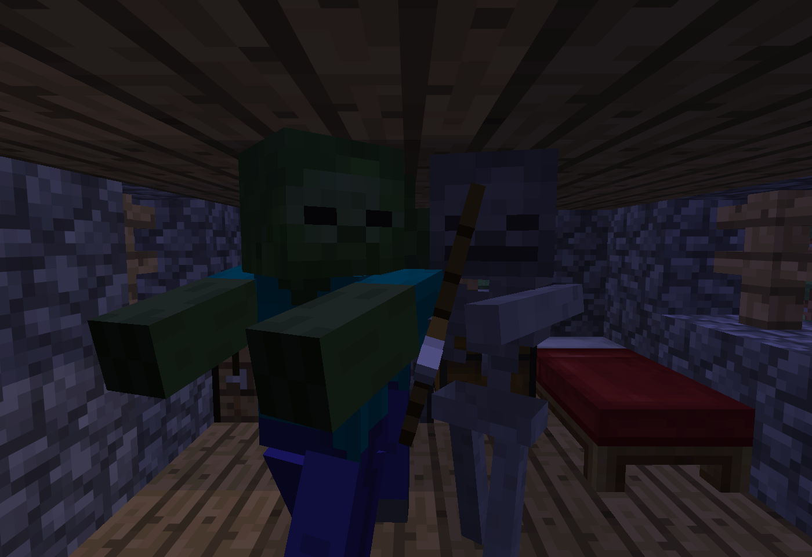

Bed
A bed is a block that allows the player to fall sleep and skip the night or a thunder weather if there are no monsters nearby and your light level is above 5. The bed also acts as a spawnpoint for the overworld as long has the bed is not broken
Obtaining
to obtain a be you will need first of all 6 blocks of any color of wool, with this wool then you will need to craft some wool slabs and with those wool slabs 3 cushions, then gather 3 planks of any woodtype and put on your crafting table a full row (3) of cushions and in the bottom the full row (3) of wood planks. And there you have your fresh new Bed!


|
Usage

First of all you will need to have some kind of light near your bed if not some agresive mobs will wake you up in the middle of the night angry for your safety!
If you have a light congratulations! you can sleep! Goodnight!